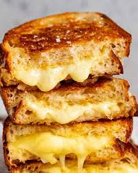

Grilled Cheese

Description
I realise it might seem strange to share a recipe for what is fundamentally just melted cheese between bread. And really, is there even such a thing as a bad grilled cheese? Perhaps not.
But there is such a thing as a GREAT grilled cheese sandwich!
Ingredients
- 2 slices sourdough bread
- 30g/ 2 tbsp SALTED butter
- 1/3 cup (heaped) vintage cheddar cheese or gruyere
- 30g/ 1/3 cup mozzarella
Steps
- Slather both sides of each piece of bread with the butter
- Heat a heavy-based skillet or frying pan over medium low heat. Place both pieces of bread in the skillet and lightly toast for 1 minute to warm it through and create a light crust.
- Flip one slice of bread, then pile on the cheddar cheese followed by the mozzarella. Place the other slice of bread on top, with the hot toasted side in contact with the cheese.
- Cook for 3 minutes or until the bread is evenly golden and crisp, pressing down lightly with a spatula every now and then. If it's browning too quickly, remove remove from the stove to cool down a bit and lower heat.
- Turn the sandwich over, and cook the other side for 3 minutes or until the bread is golden and the cheese is melted.
- Transfer to cutting board. Cut in half in one swift motion. Admire cheese pull. Devour.